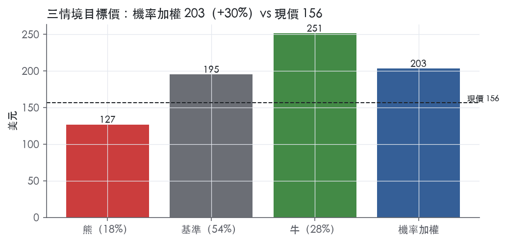
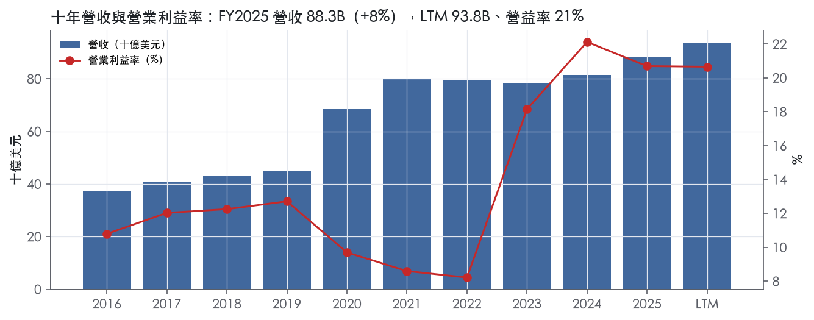
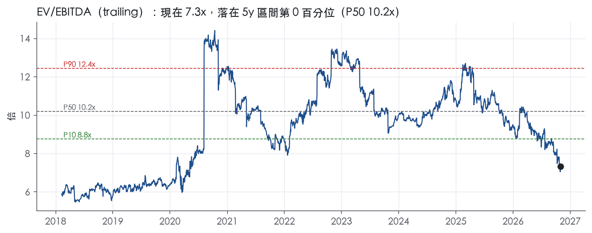
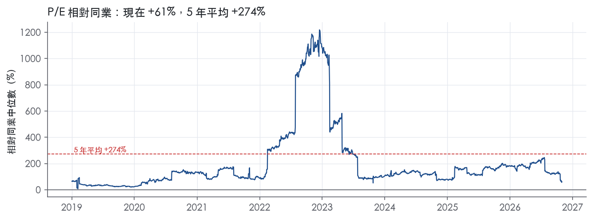
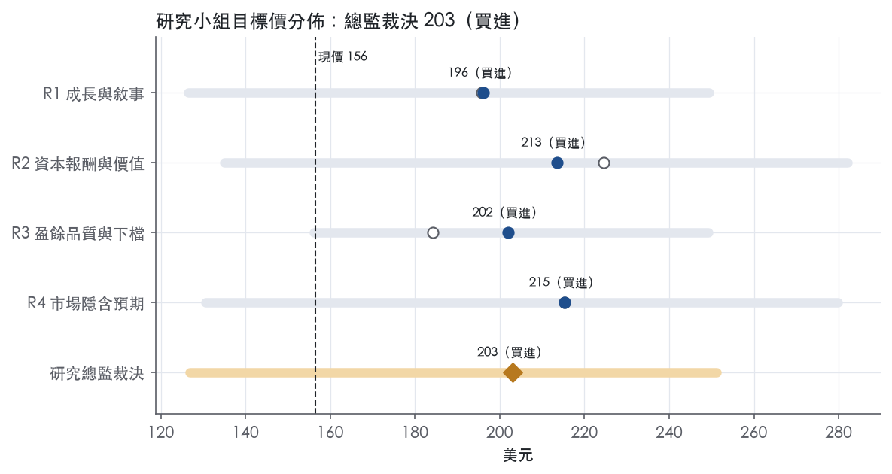
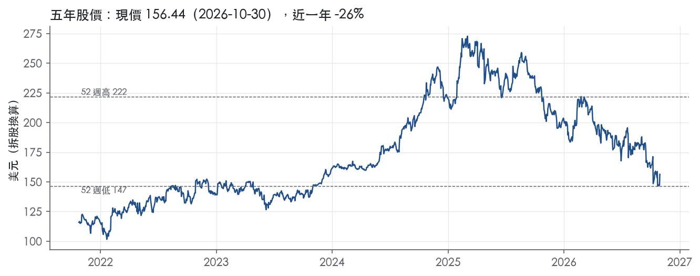

評等總表 › 通訊服務 › TMUS
被當AT&T定價的成長電信，看多｜評等 買進｜目標價 203
| 報告日 | 評等 | 目標價 | 當時股價 | 超額報酬 |
|---|---|---|---|---|
| 2026-10-30 | 買進 | 203 | 156 | +23.2% |
| 評等 | 買進 |
| 12 個月目標價 | 203 美元 |
| 現價 | 156.44 美元（2026-10-30） |
| 預期報酬 | 股價 +29.8%＋股息 3.3%＝總報酬 +33.1%；同業籃門檻 10.0%，超額 +23.2% |
| 估值方法 | EV/EBITDA 7.5x，套在未來四季的EBITDA |
| 三情境 | 熊 127／基準 195／牛 251 |
| 研究流程 | 四位研究員兩輪辯論＋研究總監裁決 |
| 資料來源 | SEC EDGAR XBRL、Tiingo、FRED（全免費） |
被當AT&T定價的成長電信，看多（研究總監裁決，四位研究員兩輪辯論後）
評等 買進｜12 個月目標價 203 美元（總監三情境機率加權 199 與研究員中位數 208 各半）｜現價 156.44（2026-10-30）
預期報酬：股價 +29.8%＋股息 3.3%＝總報酬 +33.1%。同業籃門檻 10.0%，超額 +23.2%。
估值方法：EV/EBITDA 7.5x，套在未來四季的EBITDA。三情境：熊 127（18%）／基準 195（54%）／牛 251（28%）。
什麼會讓研究總監改變看法：FY2026Q4流失率>1.15%且2027年Core Adj EBITDA指引隱含成長<3%，轉中性、倍數降到T的6.8x；反之流失率連兩季<1.0%且CFO成長追上Core Adj EBITDA成長，倍數上移至8.0x。
| 過去四季（實際，FY2026Q3） | 未來四季 | 第 5–8 季 | 第 9–12 季 | |
|---|---|---|---|---|
| 營收（B） | 93.8B | 99.0B | 103.4B | 107.6B |
| 營收成長 | 9.3% | 5.5% | 4.5% | 4.0% |
| 營業利益率 | 20.7% | 22.0% | 22.5% | 22.5% |
| EPS（美元） | 10.34 | 15.66 | 17.43 | 18.88 |
| EPS 成長 | -0.3% | 51.4% | 11.3% | 8.3% |
| 每股股息（美元） | 4.23 | 4.23 | 4.23 | 4.23 |
| P/E（現價） | 15.1x | 10.0x | 9.0x | 8.3x |
| 股息殖利率（現價） | 3.3% | 2.7% | 2.7% | 2.7% |
過去四季為申報數字；預測為研究總監的假設、程式計算。倍數與殖利率都用現價計算，用來看現價對應各期獲利的高低。
| 情境 | 機率（歷史） | 故事 | 未來四季營收成長 | 第 5–8 季營益率 | 倍數 | 目標價 | 股價漲跌 |
|---|---|---|---|---|---|---|---|
| 熊 | 18%（16%） | 風險表第1條有線綑綁價格戰使流失率連兩季≥1.15%、ARPA年增退到2%以下，固定成本去槓桿；第2條UScellular遷移疊加；第4條槓桿2.38x迫使回購放慢；倍數落到10年P10 | 3.0% | 20.0% | 6.1x | 127 | -18.9% |
| 基準 | 54%（52%） | 同基礎中個位數成長、整合重災季洗出LTM，倍數比T/VZ高一小步 | 5.5% | 22.5% | 7.5x | 195 | 24.7% |
| 牛 | 28%（31%） | 流失率回到1.0%以下、ARPA+4%守住，Q2–Q3的24%營益率成為全年水準，2027年指引重開成長溢價，倍數回到5年帶底部 | 7.0% | 23.4% | 8.8x | 251 | 60.6% |
目標價由程式依研究總監的驅動與倍數計算；機率由研究總監給定。括號內是歷史頻率：把這檔股票過去十年 12 個月報酬的波動形狀，置中在基準情境，結果落在各情境附近的比例。

四位研究員用不同方法各自估值，回應研究總監的質疑後交出第二輪，最後由總監逐點裁決。各研究員的主張見第七章，裁決理由見第八章，完整論證見《研究底稿》。
| 立場（一輪→二輪） | 加權目標價（一輪→二輪） | 評等（一輪→二輪） | 第二輪倍數 | 熊～牛目標價 | |
|---|---|---|---|---|---|
| R1 成長與敘事 | 看多→看多 | 196→196 | 買進→買進 | 7.5x | 127～249 |
| R2 資本報酬與價值 | 看多→看多 | 225→213 | 買進→買進 | 8.0x | 135～282 |
| R3 盈餘品質與下檔 | 中性→看多 | 184→202 | 加碼→買進 | 7.3x | 156～249 |
| R4 市場隱含預期 | 看多→看多 | 215→215 | 買進→買進 | 7.2x | 131～280 |
| 研究總監裁決 | 看多 | 203 | 買進 | 7.5x | 127～251 |
目標價由程式依各自的驅動與倍數計算；評等＝機率加權總報酬 − 同業籃門檻。
T-Mobile US 是美國第二大無線通訊服務商，以「Un-carrier」策略為核心賣點，用最佳網路、最佳價值與最佳體驗三件事綁住客戶。公司提供無線通訊與寬頻服務給1.424億名後付費與預付費客戶，並透過銷售多種無線裝置與配件、以及向各類合作夥伴提供批發無線服務來創造營收¹。公司最主要的支出項目與營運及擴充網路、提供全系列裝置、取得並留住高品質客戶以及支付員工薪酬有關¹。FY2025 營收 88.31B，年增 8.5%，LTM（至FY2026Q3）營收已達 93.82B。
T-Mobile 以單一無線＋寬頻業務運作，10-K 未按分部拆分揭露營收結構，但按客戶類別揭露了服務營收占比。公司透過 T-Mobile、Metro by T-Mobile 與 Mint Mobile 三大品牌提供服務、裝置與配件，銷售管道包括自營與加盟零售門市、官網、App、客服通路與全國性零售商，也透過經銷商與第三方零售出口轉售裝置¹。核心服務計畫以 Experience More 與 Experience Beyond 為主力高階方案，內含無限通話、文字與數據、免費5G、詐騙防護、串流訂閱與機上Wi-Fi等，另有入門款 Essentials 方案與軍人、退伍軍人、首應人員、55歲以上族群的專屬方案¹。除無線服務外，公司提供5G固定無線寬頻（5G broadband，利用全國5G網路的剩餘容量，覆蓋數千萬家庭）與光纖寬頻，並搭配裝置保護、金融服務與廣告等互補性產品與服務¹。10-K 未揭露各產品線各自占營收比重的具體數字。
客戶分為後付費與預付費兩大類，後付費客戶涵蓋手機、5G寬頻閘道器、光纖連線、行動網路裝置、穿戴裝置、DIGITS及其他聯網裝置（包含SyncUP與IoT），服務對象涵蓋消費者與以「T-Mobile for Business」品牌服務的企業客戶；預付費客戶則以T-Mobile、Metro by T-Mobile、Mint Mobile與Ultra Mobile品牌服務¹。公司也透過批發夥伴管理M2M與MVNO客戶對網路的接取關係¹。2025年服務營收按客戶類別分布為：後付費81%、預付費15%、批發與其他服務4%¹。2025、2024與2023年度，幾乎全部營收均來自美國（含波多黎各與美屬維京群島）¹，地理集中度極高、幾乎無國際曝險。公司在無線服務市場的主要競爭對手為AT&T與Verizon，以及Charter、Comcast、EchoStar、Cox、Altice USA等區域型業者；寬頻服務則對上有線、DSL、光纖業者及衛星網路商¹。
過去四季（FY2025Q4至FY2026Q3）呈現營收加速、獲利率因併購成本波動但整體維持成長的格局。FY2026Q1總營收23.11B，淨利增至2,504M、較去年同期微增0.5%，EPS 2.27²。FY2026Q2總服務營收190億美元年增9%，後付費服務營收158.53億美元年增13%，淨利32.39億美元年增1%，受UScellular併購相關成本（含加速折舊，稅後影響146M美元）拖累，EPS 2.99美元年增5%，Core Adjusted EBITDA 95.37億美元年增12%，Adjusted Free Cash Flow 47.97億美元年增4%²；公司當時重申2026年Core Adjusted EBITDA指引373.5億至375.0億美元，上調營運現金流指引至284億至288億美元，Adjusted Free Cash Flow指引上調至184億至188億美元²。FY2026Q3總服務營收193.75億美元年增6%，後付費服務營收162.69億美元年增9%，淨利34.55億美元年增27%，EPS 3.22美元年增34%，Core Adjusted EBITDA 96.20億美元年增11%，Adjusted Free Cash Flow 50.71億美元年增5%，營運現金流73.41億美元年減2%³；公司上調全年指引，Core Adjusted EBITDA指引區間調整為373.5億至374.5億美元，營運現金流指引調整為287億至288億美元，Adjusted Free Cash Flow指引調整為187億至188億美元，資本支出指引約100億美元，有效稅率指引下修為24%至25%³。整體來看，後付費ARPA與淨增客戶持續雙成長，是驅動服務營收加速的主因。
公司將自己定位為「America's supercharged Un-carrier」，靠持續傾聽客戶、消除痛點來顛覆電信產業，取消年約、超額費用、不可預期的國際漫遊費與數據流量包等傳統電信業做法¹。公司強調其網路是「美國最佳網路」，具備最大、最快、最多獎項與最先進的5G網路，多層頻譜組合（低頻、中頻、毫米波）支撐網路差異化¹。公司正轉型為AI賦能、數據驅動、數位優先的組織，透過T-Life App讓升級、加裝門號、攜碼轉網等交易隨時隨地完成，並導入AI平台主動預測並解決客戶問題¹。CEO Srini Gopalan在Q3法說中表示，公司「最佳網路、最佳價值、最佳體驗」的致勝公式驅動持久且可獲利的成長，並稱在核心無線、寬頻與智慧鄰接新業務上仍有巨大成長空間，「我們才剛開始」³。公司也持續透過Comcast與Grain Management的頻譜交易調整頻譜組合，強化網路資產¹。本分析師認為，T-Mobile的成長引擎已從單純搶後付費市佔，轉向ARPA提升與固定無線寬頻、企業用戶等鄰接業務擴張；UScellular併購整合的短期成本（如加速折舊）已在Q2顯現，但Q3數字顯示整合衝擊正在消退、獲利槓桿重新顯現；管理層連續兩季上調全年獲利與現金流指引，顯示對差異化策略的信心高於同業。

T-Mobile 的護城河評為窄，趨勢穩定。護城河主要來自兩項：一是 FCC 頻譜授權帶來的稀缺資產，二是全國性網路只容得下少數業者的效率規模。這兩項足以讓我們有把握 ROIC 在 5 年以上維持在資本成本之上。給不到「寬」，原因在數字：十年平均 ROIC 低於資本成本代理值，最新 ROIC 也只略高於門檻。此外，公司自己拆掉了業界的合約綁定，轉換成本偏弱。
無形資產（頻譜授權）是最硬的一條。除了少數免執照頻段，無線業者必須取得 FCC 執照，才能在指定頻率與地理區域提供服務¹。FCC 核發的執照有固定期限，依執照類型通常為 10-15 年¹。截至 2025 年 12 月 31 日，公司在全國平均控制 394 MHz 的低頻加中頻頻譜，其中 2.5 GHz 頻段平均 185 MHz¹。中頻頻譜的深度是新進者短期內無法複製的資產。此外，直接外資持有執照主體超過 20% 即被禁止¹，進一步墊高潛在進入者的門檻。
效率規模是第二條。公司以總後付費加預付費客戶數計，是美國第二大無線通訊服務商，主要對手為 AT&T 與 Verizon¹。FY2025 資本支出占營收 11.3%，全國網路的固定成本規模決定了市場只容得下三家自建全國網路的業者。
成本優勢附屬於前兩條。公司的 5G 固定無線寬頻利用全國 5G 網路的剩餘容量，覆蓋數千萬個家庭¹。這代表頻譜深度可以轉成邊際成本極低的鄰接營收。
轉換成本存在但偏弱。符合資格的客戶可用分期付款計畫購機，期間一般為 24 個月¹。高階 Experience 方案綁入串流訂閱與機上 Wi-Fi 等權益¹。但公司自己取消了年約與超額費用等業界做法¹，T-Life App 也讓攜碼轉網交易可以隨時隨地完成¹。結論是轉換摩擦主要來自裝置分期，而非制度性鎖定。
網路效應不列，因為電信客戶的效用不隨同網用戶數增加，原文也沒有相關證據。
數字只支持「窄」，不支持「寬」，主要衝突在 ROIC 十年平均。
維持「窄」而不下修為「無」，理由有兩點。第一，頻譜與全國網路的進入門檻沒有因 ROIC 低谷而消失。第二，ROIC 已連兩年站上門檻，且資本支出占營收由 FY2022 的 17.6%降至 FY2025 的 11.3%，資本密集度正在下降。
最大威脅是頻譜供給增加與價格戰，兩者都直接打擊效率規模的前提。
目標倍數相對 AT&T、Verizon 應持平，不給護城河溢價。三家共享同一套頻譜與效率規模結構，而 T-Mobile 的 ROIC 只在資本成本門檻附近，護城河本身不足以支撐倍數高於同業。若要給溢價，只能來自成長或資本密集度下降，不應掛在護城河上，且超額報酬的可見期以 5 年為上限。
| 指標 | 最新 | 十年平均 | 標準差 | 最低 | 最高 |
|---|---|---|---|---|---|
| ROIC | 10.3% | 8.9% | 3.2% | 3.9% | 14.0% |
| 營業利益率 | 20.7% | 13.5% | 4.8% | 8.2% | 22.1% |
| FCF 利潤率 | 20.4% | 3.9% | 8.6% | -5.1% | 20.4% |
| ROE | 18.2% | 12.3% | 6.1% | 3.7% | 22.2% |
程式計算。資本成本代理值（10 年債＋5%）：10.0%；ROIC 平均減資本成本：-1.1%；ROIC 有資料的 9 年中，高於資本成本 5 年。
LTM 營業現金流／淨利 2.54x、自由現金流／淨利 1.65x，兩項都是綠燈，顯示盈餘有現金支撐。但淨負債／EBITDA 達 2.38x 為黃燈，且存貨成長比營收快 41.2pp 被程式標為紅旗，這些項目拉低了整體評等至「中」，不給「高」。
現金轉換全面健康，沒有「紙上盈餘」的跡象。LTM CFO／淨利 2.54x，近三年平均 2.25x，十年平均 2.67x，三個期間都遠高於 1.00x 的綠燈門檻。FCF／淨利 LTM 1.65x、近三年 1.29x，同樣綠燈；值得注意十年平均僅 0.26x，反映 2016–2020 年高資本支出時期 FCF 曾為負（FY2016 FCF -1.92B、FY2020 FCF -2.39B）【判，依資料包年度表】，但近三年資本支出佔營收比已從 FY2021 的 15.4% 降到 FY2025 的 11.3%（資料包年度表），FCF 從 FY2023 的 8.76B 一路成長到 FY2025 的 18.00B、LTM 達 18.65B（資料包快照）。應計比率 LTM -8.2%、近三年 -6.0%、十年 -4.3%，全部為負值且遠優於 5.0% 紅燈門檻，代表淨利長期低於而非高於現金流，盈餘沒有被應計項目灌水。
新聞稿用的核心非 GAAP 指標是 Core Adjusted EBITDA 與 Adjusted Free Cash Flow³。Q3 2026 GAAP 淨利 3,455M、Diluted EPS 3.22³，與 Adjusted EBITDA 9,620M、Core Adjusted EBITDA 9,620M 並列呈現³；新聞稿註明 Core Adjusted EBITDA 與 Adjusted Free Cash Flow 是非 GAAP 指標，且公司「無法在不耗費不合理努力的情況下對淨利進行前瞻性預測，因為包含特殊項目（Special Items）、所得稅費用和利息費用等高變動性因素」³。新聞稿正文未列出 Special Items 的具體金額明細（只提及存在特殊項目的概念）。Adjusted Free Cash Flow 定義上已包含 UScellular 併購相關成本的淨支出調整，Q3 2026 Adjusted FCF 5,071M、guidance 口徑同樣排除此項³；由於原始資料未提供 UScellular 整合成本的具體美元數字，無法判斷此調整項規模，這部分建議估值研究員向公司財報附註索取明細再決定是否打折。SBC／營收僅 0.9%（LTM）、十年平均 0.8%，屬輕微項目，不構成實質盈餘灌水風險。
槓桿是本章最大的保留項目。淨負債／EBITDA LTM 2.38x、近三年平均 2.49x、十年平均 2.14x，全數落在黃燈區，淨負債從 FY2024 的 72.86B 攀升到 FY2025 的 80.68B、最新快照 80.66B（資料包年度表、快照），主因總債務在 FY2025Q4 從 78.27B 跳升到 86.28B（資料包季表），時間點對應 UScellular 併購與頻譜交易（Comcast 600 MHz、Grain 800/600 MHz 交換）¹的資金需求。利息保障倍數計分表 LTM 與近三年均無數據，僅十年平均 4.39x，低於 8.00x 綠燈門檻但高於 3.00x 紅燈門檻，顯示付息能力偏中性、非危險區。股東回饋力度很大：（股利＋回購）／淨利 LTM 145.6%、近三年 140.8%、十年平均 153.4%，全部是綠燈但超過 100%，公司明確在靠舉債支撐回饋——Q3 2026 單季股東回饋 3.5B（回購 2.4B＋股利 1.1B），累計自計畫啟動以來回饋 58.1B（回購 46.7B＋股利 11.5B）³。稀釋股數年變動 LTM -1.0%、近三年 -3.4%，呈現淨減少（綠燈），回購確實在縮減股數而非被 SBC 稀釋吃掉。
估值應以 GAAP 淨利與 CFO 為主軸，Core Adjusted EBITDA／Adjusted FCF 可作為交叉檢查但不應直接取代 GAAP 數字，因為新聞稿未揭露 Special Items 的具體拆分，無法驗證調整的合理性。現金轉換與應計比率都支持盈餘「不打折」，但淨負債／EBITDA 2.38x 的黃燈應該限制 EV/EBITDA 倍數上限、不宜套用歷史景氣循環頂端的倍數區間（量化底稿顯示目前 EV/EBITDA 7.3x 已低於 5 年 P10 的 8.8x）。存貨與應收的營運資金紅旗建議在估值中保留觀察但不立即調整目標價，待下一季財報確認是否為 UScellular 整合的暫時性現象。
| 項目 | LTM | 近三年 | 十年 | 燈號 | 規則 |
|---|---|---|---|---|---|
| 營業現金流／淨利 | 2.54x | 2.25x | 2.67x | 綠 | ≥1.00x 綠、<0.80x 紅 |
| 自由現金流／淨利 | 1.65x | 1.29x | 0.26x | 綠 | ≥0.90x 綠、<0.60x 紅 |
| 應計比率（(淨利−CFO)／平均總資產） | -8.2% | -6.0% | -4.3% | 綠 | ≤0.0% 綠、>5.0% 紅 |
| SBC／營收 | 0.9% | 0.9% | 0.8% | 綠 | ≤3.0% 綠、>8.0% 紅 |
| 淨負債／EBITDA | 2.38x | 2.49x | 2.14x | 黃 | ≤1.50x 綠、>3.00x 紅 |
| 利息保障倍數（營業利益／利息） | — | — | 4.39x | — | ≥8.00x 綠、<3.00x 紅 |
| 稀釋股數年變動 | -1.0% | -3.4% | 4.0% | 綠 | ≤0.0% 綠、>3.0% 紅 |
| （股利＋回購）／淨利 | 145.6% | 140.8% | 153.4% | 綠 | ≥50.0% 綠、<0.0% 紅 |
| 應收帳款成長 − 營收成長（FY2025） | +5.5pp | — | — | 黃 | ≤5pp 綠、>15pp 紅 |
| 存貨成長 − 營收成長（FY2025） | +41.2pp | — | — | 紅 | ≤5pp 綠、>15pp 紅 |
程式計算；燈號以 LTM（無則近三年平均）判定。
| 風險 | 觸發指標（看什麼數字、在哪裡看） | 對 EPS 的影響方向與粗略幅度 | 未來 12 個月發生機率 | 出處 |
|---|---|---|---|---|
| 產業飽和下的競爭與定價壓力，侵蝕 ARPA/淨增戶動能 | 季報 Postpaid ARPA（最新 $155.73）、Postpaid net account additions（最新 274K）、churn（最新 1.09%，季季走高）³ | 方向：負，幅度：中（ARPA/淨增戶是本季 EPS 年增 34% 的主要驅動，一旦轉弱，EPS 成長率會明顯收斂） | 中 | ⁴³ |
| UScellular 併購整合執行風險（網路/客戶遷移、重組費用、商譽減損） | 10-Q/季報中與 UScellular 相關的 Special Items、加速折舊金額（Q2 已有稅後 146M 影響）、商譽減損揭露 | 方向：負，幅度：中（已實際發生過一次性稅後 146M 衝擊 EPS） | 中 | ⁴ |
| 網路攻擊與資安事件（已有兩次重大事件前例） | 新的資安事件公告、訴訟/集體訴訟和解金額、FCC 調查結果，見 10-K Note 18 Contingencies | 方向：負，幅度：大（2021、2023 兩次事件已產生仲裁、集體訴訟與 FCC 調查相關重大費用）⁴ | 中 | 10-K 年報 FY2025 Item 1A（風險因素） |
| 高負債水位＋利率/信用環境惡化，推高融資成本、壓縮股東回饋空間 | 淨負債（最新 80.66B）、總債務（最新 86.28B）、ust10y（4.98%）、hy_oas（3.26）、信評動向 | 方向：負，幅度：中（利息負擔上升會直接吃掉 EPS，且可能限制股票回購/股息，而公司目前股東回饋計畫已排到 18.2B）⁴³ | 低～中 | ⁴ |
| 監管/國家安全義務與頻譜政策變動（FCC 政府承諾、CFIUS 緩解協議） | FCC 執法或罰款公告、頻譜交易（Comcast、Grain 交易進度與金額）、政府承諾達成情況 | 方向：負，幅度：小～中（若未履行政府承諾可能有罰款，金額未揭露具體上限）⁴ | 低 | 10-K 年報 FY2025 Item 1A（風險因素） |
風險一：競爭與定價壓力。公司自己承認「產業飽和下所有市場segment的競爭將進一步加劇，對定價與利潤率造成壓力」⁴。目前 Postpaid churn 已連三季走高（0.97%→0.99%→1.09%）³，而本季 EPS 年增 34% 高度依賴 ARPA（+4%）與淨增戶的雙重拉動³。這個引擎一旦被對手（AT&T、Verizon 及固定寬頻業者）用折扣或捆綁搶走，EPS 成長率的回落速度會比市場預期快。這條風險最值得每季盯緊 churn 與 ARPA 兩個數字。
風險二：UScellular 整合執行風險。10-K 明確寫出「UScellular Acquisition 相關的重組與整合活動預計在未來兩年內發生，可能涉及網路整合與客戶遷移風險，包括服務中斷、帳戶與系統轉換延遲」⁴。這不是假設性風險，Q2 已經實際發生：加速折舊造成稅後 146M 美元的 EPS 拖累。Q3 數字顯示衝擊消退、淨利年增 27%³，但整合期還有至少一年多，任何網路切換失誤或客戶流失都會重新打到當期 EPS。
風險三：資安事件。這條風險在 10-K 中篇幅最長，且不是「未來可能」，而是「已發生兩次」：2021 年 8 月與 2023 年 1 月的網路攻擊，導致公司「因應並解決大規模仲裁索賔、多起集體訴訟與一項 FCC 調查而產生重大費用」⁴。公司直言「預期我們將持續成為網路攻擊的目標」，且 AI 技術的演進讓威脅方「更難被及時識別、調查與補救」⁴。由於電信業持有巨量個資且涉及金融服務（T-Mobile Visa 卡），這條風險的尾部損失（訴訟和解、監管罰款）可以單季吃掉可觀的 EPS，歷史上已驗證過。
風險四：高負債與信用環境。公司直言「我們有且預期將持續擁有大量債務」，這會「降低我們應對經濟、市場與產業條件變化的靈活性，增加償債所需現金」，並可能「減少可用於資本支出、股票回購、股息的資金」⁴。目前淨負債 80.66B、總債務 86.28B，在 ust10y 已達 4.98%、hy_oas 3.26 的環境下，再融資成本敏感度上升。公司目前股東回饋授權額度高達 18.2B（至 2026 年底）、累計已執行 58.1B³，若信用環境進一步收緊，这類回饋空間會先被壓縮，間接影響市場對 EPS 品質的評價。
風險五：監管與國家安全義務。公司在 CFIUS 緩解協議下承擔國家安全義務，「可能限制我們對特定美國設施、合約、人員、供應商選擇與營運的控制權」，未履行義務「可能導致額外合規成本、鉅額罰款或其他法律與行政行動」⁴。此外 Sprint 併購的政府承諾（5G網路建設、固定無線寬頻行銷義務）若未達成，也可能有罰款⁴。這條風險機率偏低，但觸發時多為一次性罰款，對單季 EPS 衝擊有限，排在第五位。
現價 156.44 對應 trailing（過去四季）P/E 15.1x、EV/EBITDA 7.3x、EV/EBITA 12.7x、EV/Sales 2.6x、FCF 殖利率 11.2%。主要估值倍數 EV/EBITDA 現在 7.3x，落在5 年區間第 0 百分位（P10／P50／P90 = 8.8x／10.2x／12.4x）。

把程式的機械基準預測放到現價下，市場付的前瞻倍數是：EV/EBITDA（未來四季） 6.7x、P/E（未來四季） 10.1x、EV/EBITDA（第 5–8 季） 6.3x、P/E（第 5–8 季） 9.0x。反推 DCF 顯示市價隱含未來五年營收年成長 -2.1%（WACC 9.0%、終值成長 3.0%、FCF 利潤率 20.6%，SBC 不加回）。
| 倍數 | 現在 | 5 年 P10 | 5 年 P50 | 5 年 P90 | 現在分位 | 全期 P50 |
|---|---|---|---|---|---|---|
| P/E | 15.1x | 19.4x | 25.3x | 99.3x | 0.2% | 25.2x |
| EV/EBITDA | 7.3x | 8.8x | 10.2x | 12.4x | 0.2% | 9.8x |
| EV/EBITA | 12.8x | 15.4x | 18.7x | 46.2x | 0.2% | 17.4x |
| EV/EBIT | 12.8x | 15.8x | 19.5x | 45.8x | 0.2% | 17.9x |
| EV/Sales | 2.6x | 2.8x | 3.2x | 4.2x | 3.7% | 3.0x |
| P/S | 1.8x | 2.0x | 2.4x | 3.3x | 2.5% | 2.1x |
| P/FCF | 9.0x | 11.8x | 22.3x | 105.9x | 0.6% | 28.4x |
trailing 倍數（股價 ÷ 過去四季）；分位以每個交易日計算。
同業籃：T, VZ, CMCSA, CHTR（手動名單（playbooks/peers.yaml））。評等門檻 10.0%：同業「倍數不變下持有一年」的隱含報酬中位數（＝ FCF 殖利率 ×(1＋g)＋g，g 為 5 年營收年複合成長並夾在 −2%～8%），每家夾在 0～15%、P/E 低於 5 倍視為資料可疑而排除，中位數再限制在 10 年債到 10 年債＋5% 之間（同業原始中位數 10.4%）；排除：CHTR（P/E 2.9x 資料可疑）。
| 代號 | 市值 | 5 年營收 CAGR | 營益率 | ROIC | P/E | 5 年 P/E 中位數 | EV/EBITDA | P/FCF | 隱含報酬 |
|---|---|---|---|---|---|---|---|---|---|
| TMUS | 166.3B | 5.2% | 20.7% | 10.3% | 15.1x | 25.3x | 7.3x | 8.9x | 17.0% |
| T | 146.5B | -2.6% | 18.3% | 8.7% | 11.6x | — | 6.8x | 8.2x | 9.9% |
| VZ | 185.4B | 1.5% | 20.9% | 9.4% | 11.4x | 10.0x | 7.1x | — | 10.4% |
| CMCSA | 82.7B | 3.6% | 14.7% | 8.7% | 7.4x | 11.0x | 4.8x | 4.2x | 28.3% |
| CHTR | 13.5B | 2.6% | 23.3% | 9.1% | 2.9x | 11.0x | 5.0x | 3.1x | 35.7% |
| 同業中位數 | 2.1% | 19.6% | 8.9% | 9.4x | 11.0x | 5.9x | 4.2x | 10.0% |
全部 trailing，程式以各公司 SEC XBRL 與 Tiingo 行情計算；第一列為本檔。
P/E 相對同業中位數：現在 61.1%，過去 1 年平均 171.1%、3 年 139.7%、5 年 273.7%；EV/EBITDA 相對同業中位數：現在 24.7%，過去 1 年平均 52.1%、3 年 53.9%、5 年 47.2%。

事後實現前瞻倍數帶（EV/EBITDA，2018-11-19..2025-11-17）：P10／P50／P90 = 4.3x／9.0x／11.0x。它是每個交易日的股價除以之後四季實際實現的指標；一年後，今天的第 5–8 季正是那時的未來四季，所以這條帶是 12 個月目標價的同口徑倍數。因為用的是事後實際而非當時預期，過去成長超乎預期的公司這條帶會偏低。
程式的機械基準（成長率從過去四季年增率三年收斂到 6%、利潤率持平）用 事後實現前瞻 EV/EBITDA P50 估值得到 290（85.3%），市場現行前瞻倍數（現價 ÷ 基準 未來四季指標）一年後持平，套在基準 第 5–8 季指標得到 197。這兩個數字只是參考點，不是本報告的目標價；研究員對這個定價的回應在第七章。
下表是每位研究員第一輪（各自獨立）與第二輪（回應研究總監的質疑後）的結果。目標價全由程式依各自的假設計算。
| 立場（一輪→二輪） | 加權目標價（一輪→二輪） | 評等（一輪→二輪） | 第二輪倍數 | 熊～牛目標價 | |
|---|---|---|---|---|---|
| R1 成長與敘事 | 看多→看多 | 196→196 | 買進→買進 | 7.5x | 127～249 |
| R2 資本報酬與價值 | 看多→看多 | 225→213 | 買進→買進 | 8.0x | 135～282 |
| R3 盈餘品質與下檔 | 中性→看多 | 184→202 | 加碼→買進 | 7.3x | 156～249 |
| R4 市場隱含預期 | 看多→看多 | 215→215 | 買進→買進 | 7.2x | 131～280 |
| 研究總監裁決 | 看多 | 203 | 買進 | 7.5x | 127～251 |
目標價由程式依各自的驅動與倍數計算；評等＝機率加權總報酬 − 同業籃門檻。
分歧度：第一輪 加權目標價 184～225（區間＝現價的 26%）· 倍數 6.5～8.5x · 立場 看多×3、中性×1；第二輪 加權目標價 196～215（區間＝現價的 12%）· 倍數 7.2～8x · 立場 看多×4（方向一致）。

| 研究員 | 第二輪主張 | 堅持的理由 |
|---|---|---|
| R1 成長與敘事 | 看多，目標7.5x EV/EBITDA，只比現行7.3x高一小步。 | 不取自家倍數十年中位數，因為投入資本報酬率連兩年持平在10.3%。 |
| R2 資本報酬與價值 | 看多，目標8.0x，取過去一年市場付的下緣。 | 資本支出比降到11.3%，自由現金流升到18.00B，不該降到AT&T水準。 |
| R3 盈餘品質與下檔 | 看多，目標7.3x，即現行倍數一年後持平。 | 成長降檔已寫進營收預測，再壓倍數就是重複扣分。 |
| R4 市場隱含預期 | 看多，目標7.2x，高於市場現在付的6.7x。 | 市場錯把成長放緩到4–5%，當成與AT&T同質。 |
每位研究員的逐條回應與完整論證見《研究底稿》（TMUS_研究底稿_2026-11-01.docx）。
| 分歧點 | R1 | R2 | R3 | R4 | 什麼資料會分出勝負 |
|---|---|---|---|---|---|
| 基準倍數 | 7.5x ntm，略高於持平 | 8.0x ntm，1 年帶 P10 | 7.3x ntm，trailing 持平 | 7.2x q5_q8，前瞻帶 P25 之下 | FY2026Q4 財報與 2027 年指引（2027-01 下旬）：流失率、Core Adj EBITDA 指引成長；T／VZ 倍數是否同步變動 |
| NTM 營益率／D&A | 21.6%／14.9% | 21.0%／15.4% | 22.0%／15.4% | 22.0%／15.0% | FY2026Q4 GAAP 營益率對 Q4 2025 的 15.4%；10-K Special Items 金額 |
| 營收 y2／y3 | 4.5／4.0% | 4.5／4.0% | 5.0／4.5% | 4.5／4.0% | FY2027Q1（首個完全同基礎季）服務營收年增、淨增帳戶 |
| 牛／熊倍數 | 8.8x／6.1x | 9.8x／6.5x | 8.5x／6.8x（＝T 現行） | 8.5x／5.8x（q5_q8） | 流失率連兩季 ≥1.15% 或回到 1.0% 以下；價格戰時 T／VZ 是否同步降評 |
| 股數變動 | −3.5% | −4.0% | −4.9%（沿用基準） | −4.0% | 2027 年股東回饋授權金額（對照 2026 年 18.2B） |
一、基準倍數：選 R1，7.5x ntm。 現行 7.3x 在自家 5 年帶第 0.2 百分位、10 年帶第 25.4 百分位（錨帶數字），與 T 6.8x、VZ 7.1x 同價（同業表），但三家 5 年營收 CAGR 是 5.2%、−2.6%、1.5%，ROIC 是 10.3%、8.7%、9.4%。同價就是市場宣告成長溢價已消失；我們的 y1 5.5% 仍高於 T／VZ，倍數該比持平多一小步，也只能一小步：護城河章不給護城河溢價，ROIC 連兩年 10.3%代表 Sprint 綜效期的重評引擎已停。R2 的 8.0x 錨在 1 年帶 P10，但那條帶形成於股價 −25.7% 的降評年，降評年的 P10 是下跌趨勢上的一點，不是地板；他營收預測勝過基準只有 46%，偏離基準要更強的證據，他沒有；且基準模型 NTM 淨利 16.14B 對營業利益 20.97B 未扣利息、期末淨負債 75.32B 偏低，所有 EV 法目標價已有向上偏誤，不該再取區間上緣。R3 的「降檔已入驅動、不再壓倍數」能擋住往下走，擋不住一小步往上：持平等於接受市場把成長 5.5%、利潤率回升的公司繼續當萎縮電信定價。R4 的 7.2x q5_q8 換成 ntm 口徑與 R1 相近，我選 ntm，因為錨是自家 trailing 帶與同業。R1 以「10 年 P50 含 2016–19 低利率期」為不取 P50 的理由，屬利率論證，不採，公司因素已足夠。
二、NTM 利潤率：選 R4，22.0%／15.0%。 只有我看得到完整季表：LTM 營益率 20.7% 裝了兩個整合重災季——FY2025Q4 15.4%對前一年同季 21.0%，FY2026Q1 19.5% 對 23.0%——而 FY2026Q2／Q3 已回到 24.1%／24.0%。Q4 2026 只要不重演 Q4 2025，NTM 利潤率就會機械式上升，不需要新的槓桿；Q3 GAAP EBITDA 9.11B對 7.94B的增幅遠超營收的 7.4%，EBITDA 層級的槓桿也是真的。R1 的 G1 邏輯正確（加速折舊消失不進 EBITDA），但 21.6%／14.9% 合起來讓 EBITDA 率幾乎停在 LTM，與 Q3 證據矛盾；R3 把 D&A 留在 15.4% 卻引用 Q2 稅後 146M 加速折舊，自相矛盾；R2 的 21.0% 沒給機制，且他的營業利益預測本就偏低 1.1%。R4 的一組同時處理了 D&A 部分回落與費用槓桿。y2／y3 不跟 R4 的 22.8%／23.0%：他營業利益預測偏高 1.8%，護城河章判 ROIC 持平，流失率上升意味留客費用，所以採 R3 的 22.5%／22.5% 停在平台。
三、營收 y2／y3：選 R1，4.5／4.0%。 y1 5.5% 四人一致，接受：Q3 服務營收年增 6.2%、總營收 7.4%，差額是循環性裝置營收。R3 是下檔研究員卻給最高的 5.0／4.5%，沒說出機制。R1 的減速來源都有數字：FY2025Q4 基期 11.3%高於 Q3 的 8.9%；前九月淨增帳戶 768 千對 919 千；ARPA 年增 4% 與流失率 1.09% 同季出現，像漲價換流失³。本部營收預測誤差中位數偏低 0.4%～0.7%，所以我不再下修 y1，但這點偏誤不足以支持 R3 的 y2。
四、情境倍數帶寬：選 R1，牛 8.8x／熊 6.1x。 熊：R3 把地板錨在 T 現行 6.8x，但熊的機制是有線綑綁價格戰（風險表第 1 條），價格戰時 T 自己也降評，今天的 T 不是地板；他的熊只離基準 −19%，該深度的歷史頻率是 32%，程式已標記。R1 的 6.1x 是自家 10 年 P10，涵蓋 FY2020 淨負債從 9.48B 跳到 60.60B 的槓桿高峰，是受過壓力的地板；R4 的 5.8x（q5_q8）與 R3 第一輪的 5.8x 換成 ntm 口徑都與它相近；R2 的 6.5x 無錨。牛：R2 的 9.8x 是 10 年 P50，等於要 ROIC 從 3.9%爬到 10.3% 那段重評重演，ROIC 已持平兩年；R3／R4 的 8.5x 只是「8.8x 以下」，沒有自己的錨；R1 的 8.8x 是 5 年 P10，即回到成長故事還成立時那條帶的底部，一年內的牛情境到此為止。
五、股數變動：選 R2（R4 同），−4.0%。 近三年稀釋股數年變動 −3.4%（財務體質章）；Q3 回購 2.4B、股利 1.1B，在 2026-12-31 到期的 18.2B 授權之內³。不取基準 −4.9%：淨負債從 72.86B 升到 80.68B，（股利＋回購）／淨利 145.6%（財務體質章），回饋已超過自由現金流，2027 年授權未知。不取 R1 的 −3.5%：股價比一年前低 25.7%，同樣金額能買回更多股數，且 Adjusted FCF 指引上修到 187–188 億美元。
漂移與總經。 R2 加權 −4.9%（靠攏 39%）可追溯到 V2 的新證據（T／VZ 同價），接受。R3 加權 +9.7%（靠攏 57%）：資本支出回指引口徑、稅率、horizon 改法都是對 Q3／Q4 意見的正確回應，接受；但他把熊機率 25%→17% 向其他人靠攏，同時把熊倍數改成 6.8x 使情境變淺，深度與機率反向而行，機率那一步沒有證據，登記在 drift_rejections，其熊情境以第一輪深度（5.8x）看待——這反而讓他與 R1／R4 一致。R1、R4 無漂移。總經：四人 macro_deviations 皆空，接受；R2、R4 撤回利率壓倍數的論證正確（敏感度 t＝−0.2 不可靠，利率已在現價與門檻）。TMUS 營收幾乎全在美國（10-K Item 1），無匯率、商品通道；本行路徑（GDP 1.8、聯邦基金 4.38、10 年債 4.98、Baa 利差 1.75）對它只有 86.28B 債務的再融資成本一條，落在風險表第 4 條與熊情境的回購放慢，不進基準倍數。無偏離。
| 驅動 | 機械基準 | 最終 | 理由 |
|---|---|---|---|
| rev_growth_y1／y2／y3 | 8.2／7.1／6.0% | 5.5／4.5／4.0% | 裁決三 |
| op_margin_y1／y2／y3 | 20.7% | 22.0／22.5／22.5% | 裁決二；y3 不再擴張 |
| da_pct_rev | 15.4% | 15.0% | 裁決二，加速折舊部分退場 |
| tax_rate | 23.0% | 24.5% | 指引 24%–25% 中點³ |
| share_change_pct | −4.9% | −4.0% | 裁決五 |
| capex_pct_rev、sbc_pct_rev | 10.7%、0.9% | 沿用 | 資本支出指引約 100 億美元與 LTM 比率方向一致 |
目標倍數 7.5x EV/EBITDA，horizon 未來四季，套在一年後的 LTM EBITDA。錨是自家 trailing 帶：高於現行 7.3x，低於 1 年 P10 8.0x與 5 年 P10 8.8x；對同業只給 T 6.8x／VZ 7.1x 之上的成長差溢價，不給護城河溢價。相對市場持平：程式檢查表顯示 7.5x ntm 比市場持平倍數高 2%，意思是我認為一年後市場付的只比今天多一點。基準模型未扣利息使期末淨負債偏低、目標價偏高（方向確定、幅度程式未提供），是我不取 8.0x 的理由之一。
| 情境 | 機率 | 取自 | 與基準不同的驅動 | 倍數 | 故事 |
|---|---|---|---|---|---|
| 牛 | 28% | R1 | 營收 7.0／6.5／6.0%；營益率 22.5／23.4／23.9% | 8.8x | 流失率回到 1.0% 以下、ARPA +4% 守住，Q2–Q3 的 24% 營益率成為全年水準，2027 年指引重開成長溢價，倍數回到 5 年帶底部 |
| 基準 | 54% | 總監 | — | 7.5x | 同基礎中個位數成長、整合重災季洗出 LTM，倍數比 T／VZ 高一小步 |
| 熊 | 18% | R1 | 營收 3.0／2.5／2.0%；營益率 20.5／20.0／19.5%；股數 −2.0% | 6.1x | 風險表第 1 條有線綑綁價格戰使流失率連兩季 ≥1.15%、ARPA 年增退到 2% 以下，固定成本去槓桿；第 2 條 UScellular 遷移疊加；第 4 條槓桿 2.38x 迫使回購放慢；倍數落到 10 年 P10 |
機率從歷史出發：我的情境幾何與 R1 幾乎相同（牛約 +31%／熊約 −34%），程式給他的歷史頻率是 30／52／18，我給 28／54／18。牛少 2 個百分點是公司特有的：牛要流失率在兩季內反轉到 1.0% 以下，而 Q3 的 1.09% 是 8-K 表上最高值，反轉尚未開始。熊維持歷史：唯一活著的觸發（流失率）已寫進基準驅動（y1 5.5% 對基準 8.2%），再加熊機率是重複扣分，這正是我第一輪對 R1、R3 的意見。牛高於熊與這檔股票的歷史一致；本部過去 22 份報告全部熊高於牛，這次不延續。兩端都在 2027 年 1 月下旬的 Q4 財報與 2027 年指引見分曉。
市場對基準預測付的 EV/EBITDA(NTM) 是 6.7x，trailing 7.3x 與 T／VZ 同價，反推 DCF 隱含營收 −2.1%（參數敏感，只看方向）。我們的 NTM EBITDA 與機械基準相差不大（營收低、利潤率高互抵），差距不在盈餘而在分類：市場把 UScellular 墊高效果消退後的「成長放慢到 5%」當成「與 AT&T 同質」，我們認為 5.5% 成長加整合季洗出 LTM 足以撐住一小段溢價。立場看多；相近假設下 R1、R3 第二輪的機率加權總報酬是 +28.7%／+32.4%，門檻 10.0%，程式評等應為買進，與立場一致。
現價 156.44 → 點估目標價 195 → 機率加權目標價 199 → 目標價 203，差距拆成五段：成長順延 +35 美元（市場現行倍數 7.3x 一年後持平、獲利照機械基準）；倍數差 +6 美元（總監倍數 7.5x vs 市場持平倍數 7.3x，同一機械基準預測）；盈餘差 -2 美元（總監預測的未來四季EBITDA 36.6B vs 機械基準 36.6B，同一倍數）；情境不對稱 +3 美元（機率加權減點估）；研究小組平均 +5 美元（總監機率加權 199 與研究員第二輪中位數 208 各半）。各段相加等於目標價減現價。本階段未接賣方共識，差距以市場隱含預期為對照。
| 驅動 | 機械基準 | 研究總監 | 差異 |
|---|---|---|---|
| 未來四季營收成長 | 8.2% | 5.5% | -2.7 pp |
| 第 5–8 季營收成長 | 7.1% | 4.5% | -2.6 pp |
| 第 9–12 季營收成長 | 6.0% | 4.0% | -2.0 pp |
| 未來四季營益率 | 20.7% | 22.0% | +1.3 pp |
| 第 5–8 季營益率 | 20.7% | 22.5% | +1.8 pp |
| 第 9–12 季營益率 | 20.7% | 22.5% | +1.8 pp |
| D&A／營收 | 15.4% | 15.0% | -0.4 pp |
| 資本支出／營收 | 10.7% | 10.7% | ＝ |
| SBC／營收 | 0.9% | 0.9% | ＝ |
| 稅率 | 23.0% | 24.5% | +1.5 pp |
| 股數年變動 | -4.9% | -4.0% | +0.9 pp |
研究總監只寫偏移，未寫的沿用基準。
| 期 | 營收 | 成長 | 營益率 | 營業利益 | EBITDA | EBITA | 淨利 | EPS | FCF | 期末淨負債 |
|---|---|---|---|---|---|---|---|---|---|---|
| 未來四季 | 99.0B | 5.5% | 22.0% | 21.8B | 36.6B | 21.8B | 16.4B | 15.66 | 21.5B | 75.6B |
| 第 5–8 季 | 103.4B | 4.5% | 22.5% | 23.3B | 38.8B | 23.3B | 17.6B | 17.43 | 22.9B | 69.1B |
| 第 9–12 季 | 107.6B | 4.0% | 22.5% | 24.2B | 40.3B | 24.2B | 18.3B | 18.88 | 23.8B | 61.7B |
程式依上表的驅動計算；季度用最近四季季節性分攤；不含營運資金變動。
估值方法：EV/EBITDA 7.5x，套在未來四季的EBITDA。研究總監目標倍數的錨：自家trailing EV/EBITDA帶：高於現行7.3x（5年第0.2百分位、10年第25.4百分位），低於1年P10 8.0x與5年P10 8.8x；對T 6.8x/VZ 7.1x只給成長差溢價、不給護城河溢價；比市場持平倍數高2%。
計算：EBITDA（未來四季） 36.6B × 7.5x＝EV 274.7B，減未來四季期末淨負債 75.6B＝權益價值 199.1B，除以未來四季的股數 → 點估目標價 195（24.7%）；隱含 P/E（未來四季）12.5x、P/E（第 5–8 季）11.2x、EV/EBITDA（第 5–8 季）7.1x、FCF 殖利率（第 5–8 季）11.5%。
總監三情境機率加權目標價 199，研究員第二輪中位數 208，兩者各半＝目標價 203；預期報酬 股價 +29.8%＋股息 3.3%＝總報酬 +33.1%；減評等門檻 10.0%（同業籃隱含報酬中位數（T, VZ, CMCSA, CHTR））＝超額報酬 +23.2% → 評等 買進（超額 >+15% 買進、+5～+15% 加碼、±5% 中立、−5～−15% 減碼、<−15% 賣出）。同一份資料重開研究小組，超額約有正負四個百分點的雜訊（一個標準差，二十檔實測）；以此估計，評等落在其他級距的機率不到一成。
| 情境 | 機率 | 未來四季成長 | 第 5–8 季成長 | 第 5–8 季營益率 | EBITDA（未來四季） | 倍數 | 目標價 |
|---|---|---|---|---|---|---|---|
| 熊 | 18% | 3.0% | 2.5% | 20.0% | 34.3B | 6.1x | 127 |
| 基準 | 54% | 5.5% | 4.5% | 22.5% | 36.6B | 7.5x | 195 |
| 牛 | 28% | 7.0% | 6.5% | 23.4% | 37.6B | 8.8x | 251 |
| 主張 | 驗證日 | 看哪個數字 | 門檻 |
|---|---|---|---|
| FY2026Q4後付費帳戶流失率不再惡化 | 2027-02-15 | postpaid account churn（8-K） | <= 1.10% |
| 整合重災季洗出，Q4營益率回升 | 2027-02-15 | >= 18.0%（假設門檻；對照Q4 2025的15.4%） | |
| 首個完全同基礎季服務營收仍中個位數成長 | 2027-05-15 | FY2027Q1總服務營收年增率 | >= 4.5% |
| 2027年股東回饋授權支撐股數年減4% | 2027-03-31 | 2027年股東回饋授權金額 | >= 14B（假設門檻） |
| 倍數比持平多一小步 | 2027-11-01 | trailing EV/EBITDA | >= 7.5x |
到期由程式結算（第 5 階段帳本）。
內文上標數字對應下列公司申報文件；未標上標的分析與判斷，是研究小組的觀點。報告中的每個數字都經程式逐一核對資料包或原文。
| 期 | 營收 | 成長 | 毛利率 | 營益率 | EBITDA | 淨利 | EPS | CFO | FCF | ROIC | 淨負債 | 稀釋股數 |
|---|---|---|---|---|---|---|---|---|---|---|---|---|
| FY2016 | 37.5B | — | 71.1% | 10.8% | 10.3B | 1.5B | 1.69 | 2.8B | -1.9B | — | 16.7B | 0.8B |
| FY2017 | 40.6B | 8.3% | 71.4% | 12.0% | 10.9B | 4.5B | 5.20 | 3.8B | -1.4B | 14.0% | 12.5B | 0.9B |
| FY2018 | 43.3B | 6.7% | — | 12.3% | 11.8B | 2.9B | 3.36 | 3.9B | -1.6B | 10.9% | 11.8B | 0.9B |
| FY2019 | 45.0B | 3.9% | — | 12.7% | 12.3B | 3.5B | 4.02 | 6.8B | 0.4B | 11.5% | 9.5B | 0.9B |
| FY2020 | 68.4B | 52.0% | — | 9.7% | 20.8B | 3.1B | 2.65 | 8.6B | -2.4B | 6.3% | 60.6B | 1.2B |
| FY2021 | 80.1B | 17.1% | — | 8.6% | 23.3B | 3.0B | 2.41 | 13.9B | 1.6B | 4.7% | 67.2B | 1.3B |
| FY2022 | 79.6B | -0.7% | — | 8.2% | 20.2B | 2.6B | 2.06 | 16.8B | 2.8B | 3.9% | 72.6B | 1.3B |
| FY2023 | 78.6B | -1.3% | — | 18.2% | 27.1B | 8.3B | 6.93 | 18.6B | 8.8B | 7.8% | 69.9B | 1.2B |
| FY2024 | 81.4B | 3.6% | — | 22.1% | 30.9B | 11.3B | 9.66 | 22.3B | 13.5B | 10.3% | 72.9B | 1.2B |
| FY2025 | 88.3B | 8.5% | — | 20.7% | 31.8B | 11.0B | 9.72 | 27.9B | 18.0B | 10.3% | 80.7B | 1.1B |
SEC XBRL；每股數據已依拆股換算到現在股數基準。EBITDA 空白 = 該年無形攤銷在 companyfacts 中缺 tag。
| 期 | 期末 | 推導 | 營收 | 毛利率 | 營益率 | EBITDA | 淨利 | EPS | CFO | FCF | 現金 | 總債務 |
|---|---|---|---|---|---|---|---|---|---|---|---|---|
| FY2023Q4 | 2023-12-31 | Q4 | 20.5B | — | 17.0% | 6.8B | 2.0B | 1.68 | 4.9B | 3.3B | 5.1B | 75.0B |
| FY2024Q1 | 2024-03-31 | 19.6B | — | 20.4% | 7.4B | 2.4B | 2.00 | 5.1B | 2.5B | 6.7B | 75.0B | |
| FY2024Q2 | 2024-06-30 | 19.8B | — | 23.4% | 7.9B | 2.9B | 2.49 | 5.5B | 3.5B | 6.4B | 75.0B | |
| FY2024Q3 | 2024-09-30 | 20.2B | — | 23.8% | 7.9B | 3.1B | 2.61 | 6.1B | 4.2B | 9.8B | 75.0B | |
| FY2024Q4 | 2024-12-31 | Q4 | 21.9B | — | 21.0% | 7.7B | 3.0B | 2.54 | 5.5B | 3.3B | 5.4B | 78.3B |
| FY2025Q1 | 2025-03-31 | 20.9B | — | 23.0% | 8.0B | 3.0B | 2.58 | 6.8B | 4.4B | 12.0B | 78.3B | |
| FY2025Q2 | 2025-06-30 | 21.1B | — | 24.7% | 8.4B | 3.2B | 2.84 | 7.0B | 4.6B | 10.3B | 78.3B | |
| FY2025Q3 | 2025-09-30 | 22.0B | — | 20.6% | 7.9B | 2.7B | 2.41 | 7.5B | 4.8B | 3.3B | 78.3B | |
| FY2025Q4 | 2025-12-31 | Q4 | 24.3B | — | 15.4% | 7.5B | 2.1B | 1.86 | 6.7B | 4.2B | 5.6B | 86.3B |
| FY2026Q1 | 2026-03-31 | 23.1B | — | 19.5% | 8.3B | 2.5B | 2.27 | 7.2B | 4.6B | 3.5B | 86.3B | |
| FY2026Q2 | 2026-06-30 | 22.8B | — | 24.1% | 8.9B | 3.2B | 2.99 | 7.5B | 4.8B | 2.8B | 86.3B | |
| FY2026Q3 | 2026-09-30 | 23.6B | — | 24.0% | 9.1B | 3.5B | 3.22 | 7.3B | 5.1B | 5.6B | 86.3B |
流量項目由 10-Q 的年初至今數拆成單季；Q4 = 年度 − 九個月。

本報告由 equity-desk 多代理系統產出，建置中版本，僅供內部研究與方法驗證，不構成投資建議。所有數字以 datapack.json 為準。